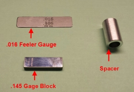
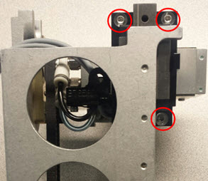
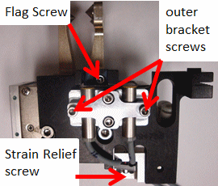
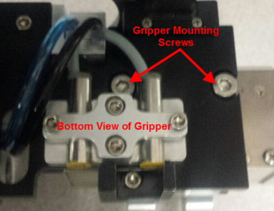
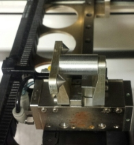
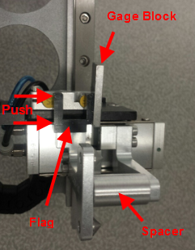
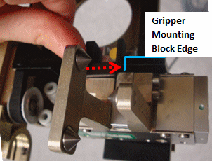
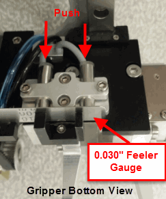
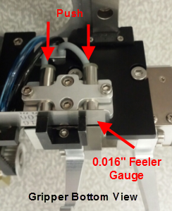
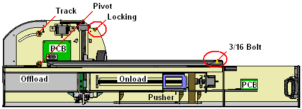

This procedure describes how to adjust the reagent gripper round sensors by adjusting the flag positioning to the carriage and adjusting the sensor positioning to the flag.
Required Materials:
Feeler gauge set
Round sensors, gripper carriage, and flag
Recommended Materials:
Gripper Alignment Tools, Part # C06159
0.145 inch Gage Block
Spacer, Clamp Gage RSM Gripper
0.016 inch feeler gauge

Round gripper sensors are used on instrument serial numbers 602616 and 900557 and above.
These two adjustments for the reagent gripper round sensors optimize sensor and flag function.
X-direction: Adjusts the flag positioning to the carriage.
Y-direction: Adjusts the sensor positioning to the flag.
Open the SPU.
The SPU is hinged on the left side. The right side is released and can be swung out from the instrument to approximately 45 degrees.
Open the upper left cover of the instrument.
Loosen the locking screw.
The locking screw prevents the SPU from swinging outward from the instrument. It is not necessary to remove the screw because the SPU plate is slotted.
Remove the 3/16-in hex bolt located near the right end of the SPU cover.
Open the lower right access panel on the front of the instrument.
Pull the spring-loaded captive pin that holds the panel (located under the SPU) to the frame.
Grasping the SPU near the right end, swing the right end away from the instrument.
Warning: The SPU off-load area slides forward and rearward as the SPU is swung in and out. To prevent damage to the SPU or the off-load area, confirm that nothing obstructs the movement of the off-load area as the SPU is moved.
(For China and Canada Only.) On the front facing the edge of the Framus assembly, install the Chinese and French labels adjacent to the existing English label.
Note: The labels are in the DxI Installation Kit.
Prepare the reagent storage module.
Remove the reagent storage module cover (six screws).
Bypass the reagent storage and SPU interlock switches.
Optional - Remove and refrigerate all the reagent packs (only required if module will be down for an extended period of time).
Two Piece Gripper Mounting Block - Prepare gripper assembly for sensor and flag adjustment.
Note:
The 2 piece gripper mounting block can be identified by the 3 screws which secure the block to the carriage. They are visible from the front of the instrument.

Optional - Remove the 3 screws securing the gripper assembly to the mount for easy access to the sensors and flag.
Loosen these screws to prepare for adjustment:
One flag screw
Two outer sensor bracket screws
Optional - one strain relief screw

One Piece Gripper Mounting Block - Prepare the gripper assembly for sensor and flag adjustment.
Note: The gripper gantry can be tilted outward to allow for easier access to the gripper assembly but it is not required for adjusting the sensors and flag.
Optional - Remove the gripper gantry for easy access to the flag and sensors.
Remove the 4 screws securing the Z motor mount to the module.
Hold the gripper gantry with your left hand, while twisting the z-drive motor with your right hand and pulling the entire assembly towards the right. After the left-side bearing of the assembly is clear of the side plate, the gripper gantry will drop enough to clear the red linear bushing.
Tilt the gripper gantry outward, to allow access to the gripper. Use caution to not bend the shaft.
Loosen these screws to prepare for adjustment:
One flag screw
Two outer sensor bracket screws
Optional - one strain relief screw
Use a feeler gauge between the Z carriage and gripper to confirm that the gripper is square to the mounting block. Adjust as needed.
Verify that the 2 screws securing the gripper to the mounting block are not loose.
Caution: The mounting screws are torqued to 20 inch pounds in manufacturing. Do not over tighten screws. Over tightened screws can interfere with gripper function.

Adjust the flag position.
If Gripper Gage Kit is:
Then:
Available
Note: The gripper gage tool kit optimizes positioning of the gripper flag to detect the correct status of the open/close sensors.
Select
Diagnostics
>>
Device Diagnostics >>
Mechanics >>
Alignments, and choose
Reagent Pack Gripper as the device.
Select
Motors >>
Disable Both Motors and move the gripper carriage to a location where it can easily be reached.
Place the spacer in the gripper with the open end to the right and select
Toggle Gripper to close with gripper on the spacer.
Note: The cone on the right gripper finger should be seated in the open end of spacer.

Place the 0.145 inch gage block between the flag and the gripper mounting block. Push the flag to the right until it touches the gage block and tighten the flag screw to secure it in position.

Not Available
Note: If the gripper gage kit is not available when adjusting the flag, it is recommended to obtain it from Tech Support and adjust the flag with the kit on a future visit.
Close the gripper and slide the flag right to contact the edge of the gripper mounting block.

Tighten the flag screw to secure the flag in position.
Determine the type of gripper mounting block and adjust the distance between the sensors and flag accordingly.
If the Mounting Block is:
Then:
Two Piece
Note: The 2 piece gripper mounting block can be identified by the 3 screws which secure the block to the carriage. They are visible from the front of the instrument. It was cut-in on serial numbers 606147 and 901603 and above.
Note: The gripper open/close sensors are more sensitive with this design because there is less metal surrounding the sensors. The distance between the sensors and flag must be increased compared to the one piece design.
Insert a
0.030 inch feeler gauge between the sensors and flag.
Push the sensors to make light contact with the flag.

Tighten the sensor bracket screws to secure the sensors in position.
Verify that the sensor wires are in the grooves of the strain-relief bracket and secure the strain-relief screw (if applicable).
One Piece
Insert a
0.016 inch feeler gauge between the sensors and flag.
Push the sensors to make light contact with the flag.

Tighten the sensor bracket screws to secure the sensors in position.
Verify that the sensor wires are in the grooves of the strain-relief bracket and secure the strain-relief screw (if applicable).
Prepare to test gripper sensor function.
Reinstall the gripper assembly.
Manually move the gripper to the home position.
Enable all motors.
Check the gripper status in the user interface. The LED on each sensor as well as the D2 (left) and D6 (right) LEDs on the reagent storage interface PCB should match the user interface status. The gripper can be manually toggled to confirm all 4 positions.
Note: Open cover switches disable power to the gripper sensors and motors. The reagent storage module cover switch disables the gripper motors, but does not affect the sensor operation.
U/I Gripper Status
Left Sensor and D2 LED
Right Sensor and D6 LED
Open
On
Off
Bad Grip
(1/4 closed)
On
On
Pack Present
(3/4 closed)
Off
On
Closed
Off
Off
If the physical state of the gripper does not match the user interface status, the sensors may be plugged into the wrong connectors on the interface PCB. Reverse the J15 and J16 connectors on the interface PCB.
If the gripper LEDs do not function, check the SPU closed switch and the two main cover switches.
Prepare for operation.
Replace all removed reagent packs (if applicable).
Remove all interlock switch bypasses.
Secure the reagent storage module cover (six screws).
Secure the SPU lower panel to the bottom of the SPU (four thumb screws).
Close the SPU.
The SPU is hinged on the left side. The right side is released and can be swung out from the instrument to approximately 45 degrees.
Warning: The SPU off-load area slides forward and rearward as the SPU is swung in and out. To prevent damage to the SPU or the off-load area, confirm that nothing obstructs the movement of the off-load area as the SPU is moved.
Grasping the SPU near the right end, swing the right end toward the instrument.
Pull the spring-loaded captive pin to attach the panel (located under the SPU) to the frame.
Close the lower right access panel on the front of the instrument.
Insert the 3/16-in hex bolt.
Tighten the bolt that holds the SPU from swinging outward from the instrument (locking screw).

Close the upper left cover of the instrument.
Note: Initialize the instrument after opening and closing the SPU, because a switch is actuated when the SPU is opened.
Initialize the system with
Remap selected.
A remap with reagent packs on-board confirms correct gripper operation.
Verify system operation.
Perform system verification as stated in the Verification of Service Repair document .